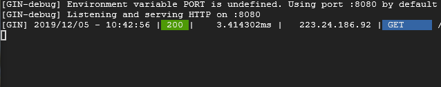
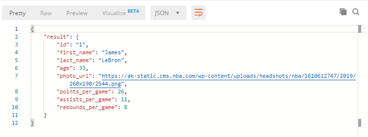

Summary - Setting up gRPC communication
gRPC is a modern, highly-efficient method of communication between systems built by Google. gRPC uses the new and efficient HTTP/2 network protocol as well Google’s Protocol Buffers (Protobuf) method of serialization which allows for more light-weight and predictable communication. Protocol Buffers can be used with any technology stack out there; code can be generated from the .proto file for nearly every programming language available.
ProtoBuf
Before setting up our server and client, we need to define the message/contract structure and service definitions using Protocol Buffers in a .proto file. If you need a guide on the protocol buffer language, you can read about it here; although the language is quite simplistic and you may be able to get away with just looking at these examples for now.
Let’s create a microservice that will provide information on various basketball players over gRPC. Note: Below guide assumes Go runtime is already installed correctly.
Now we are ready to generate code from our proto file. For this we will need the Protobuf compiler (which is written in C++). You can download the compiler for your OS from this Github page. Since I am using a Windows machine at the moment, I download the protoc-3.11.0-win64.zip for example. Within the download archive you will find a /bin folder containing the protoc binary. Take this binary and place it nearby your protoc file or vise-versa for easy access (I placed it in C:\Users\myusername\go\src\protoc_bin).
Lastly, we will need the protoc-gen-go plugin for our compiler. Run the following command to obtain it:
go get -u github.com/golang/protobuf/protoc-gen-go
Now, we are ready to compile. In command line, browse to your protoc binary (in my case C:\Users\myusername\go\src\protoc_bin) and run the following commands, where ..\basic-gRPC-proto\ is the path to my folder containing the proto file and basketball.proto is the name of that proto file:
protoc basketball.proto --go_out=plugins=grpc:. --proto_path=..\basic-gRPC-proto\
You can see that basketball.pb.go has been generated! Yay!
Implementing our newly generated Go code (Server)
Let’s take a deep breath, because the hardest part is already done :)
To make use of our new .go package I copied the resulting file to ...\go\src\basic-gRPC-proto for convenience. Then back at src folder, create a folder for your server, I called it basic-gRPC-server. Now, lets create our main.go and run this command to get google’s gRPC library:
go get google.golang.org/grpc
I am using an in-memory cache to store our sample data, just for fun. This library can be installed via the following command:
go get github.com/patrickmn/go-cache
The server code consists of two parts:
1) Attaching required methods to our server (as defined in our proto file)
2) Starting the server on some IP
First part looks like this. This method is very similar to the definition we defined in the proto file with a few extras. Take a look at the generated go file and find your GetBasketballPlayer method, this will show you the signature you will need to have, to satisfy the server definition:
type server struct{}
var c *cache.Cache
func (*server) GetBasketballPlayer(ctx context.Context, r *basketBallPlayer.PlayerRequest) (*basketBallPlayer.PlayerResponse, error) {
id := r.GetId()
playerVal, found := c.Get(id)
if found {
player := playerVal.(basketBallPlayer.Player)
return &basketBallPlayer.PlayerResponse{
Result: &player,
}, nil
}
return nil, fmt.Errorf("could not find player with id: %v", id)
}Now, for the main() course. Our main function simply creates a sample value in our cache and starts the server.
func main() {
fmt.Println("Starting gRPC micro-service...")
c = cache.New(60*time.Minute, 70*time.Minute)
c.Set("1", basketBallPlayer.Player{
Id: "1",
FirstName: "James",
LastName: "LeBron",
Age: 33,
PhotoUrl: "https://ak-static.cms.nba.com/wp-content/uploads/headshots/nba/1610612747/2019/260x190/2544.png",
PointsPerGame: 26,
AssistsPerGame: 11,
ReboundsPerGame: 8,
}, cache.DefaultExpiration)
l, e := net.Listen("tcp", ":50051")
if e != nil {
log.Fatalf("Failed to start listener %v", e)
}
s := grpc.NewServer()
basketBallPlayer.RegisterPlayerServiceServer(s, &server{})
if e := s.Serve(l); e != nil {
log.Fatalf("failed to serve %v", e)
}
}Take note of this line. If you provide the wrong signature for your proto service method above, compiler will complain here:
basketBallPlayer.RegisterPlayerServiceServer(s, &server{})
Putting these two together, your gRPC server will look like this:
Implementing our newly generated Go code (Client)
Let’s take another deep breath, the last part is even easier. We will build a basic Web API that can be called externally and returns JSON, in the background our API will call the above microservice via gRPC. Let’s get started.
First, let’s setup a basic API with Gin web framework. Download the Gin HTTP framework package:
go get github.com/gin-gonic/gin
I created a folder for my API called basic-gRPC-client with a main.go file. Then added the following code:
I love how easily you can setup a simple web server in Go. The main function is mostly router configuration.
sAddress here refers to the address of your gRPC server/microservice. Depending on your network configuration, you may need to use your internal IPs for this. 50051 is the port commonly used for gRPC.
grpc.WithInsecure() is used in this example because we are not securing our connection transport via SSL.
Let’s Go! No pun intended ;)
After pulling this code into two VMs on Google Cloud Platform. I ran both services and everything checks out.


Hope this helped you setup gRPC connectivity between your microservices :)
In Part 2 of this series, let’s add Postgre SQL connectivity.